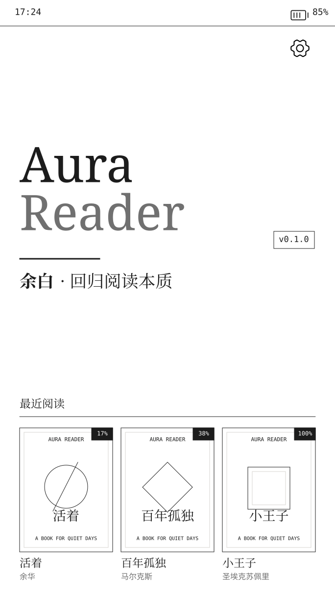
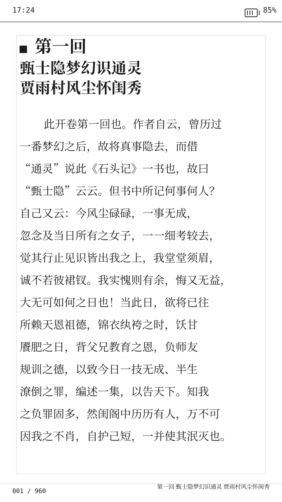
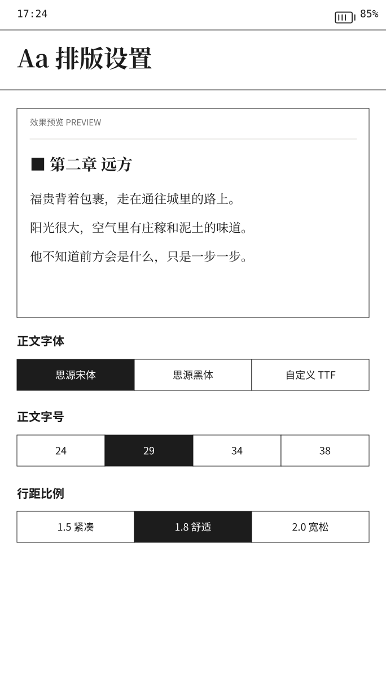
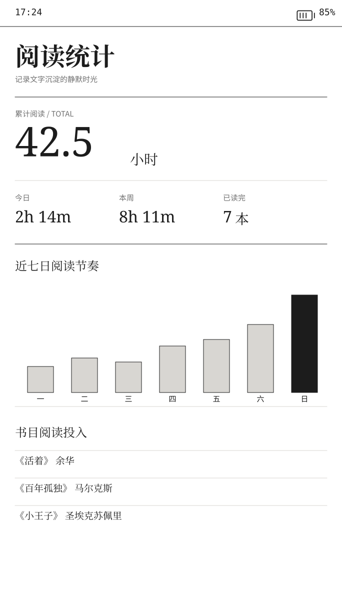

专注阅读
克制的界面与清晰的信息层级，让每次打开设备都直接回到文字。
AURAREADER / ESP32-S3 READING FIRMWARE
为专注阅读而设计的随身固件。没有信息流，没有多余提醒，让文字重新成为设备的中心。

01 / 固件介绍
AuraReader 不试图成为另一台万能设备。它把有限的屏幕、算力与注意力，都留给一本正在阅读的书。
“随身极简阅读，
回归阅读本质。”
克制的界面与清晰的信息层级，让每次打开设备都直接回到文字。
字体、字号与行距可调，把有限屏幕整理成更自然的阅读节奏。
书籍存放在 TF 卡中，不依赖账户、订阅或持续在线服务。
自动记录进度与阅读时间，让中断后的每一次返回都更从容。
需要时通过 Wi-Fi 传书，完成后重新回到离线、安静的阅读状态。
02 / 界面一览
以下画面均来自 AuraReader 的真实界面设计，不是概念渲染。



03 / WEB FLASHER
firefly v0.5.0 alpha.17 已通过构建与完整镜像校验，可使用桌面版 Chrome 或 Edge 写入设备。
步骤 1 / 3
步骤 2 / 3
步骤 3 / 3
准备就绪后，在系统窗口中选择设备串口。
04 / 使用说明
完成刷写后，把书放进设备，然后让连接退场。
QUICK START / 初次使用
将 TF 卡格式化为 FAT32，并插入设备。
使用上方网页刷机工具连接设备，按引导完成写入。
将 TXT 或 EPUB 文件复制到书库目录，重新扫描即可阅读。
WI-FI TRANSFER / Wi-Fi 传书
在 AuraReader 设置中进入 Wi-Fi 传书。
让手机或电脑连接同一网络，在浏览器中打开设备显示的地址。
上传书籍后退出传书模式，设备会更新本地书库。
05 / CHANGELOG
每一个公开版本都在这里留下清晰记录。
06 / FAQ
请使用桌面版 Chrome 或 Edge。网页刷机依赖 Web Serial，Safari、Firefox 与移动浏览器暂不支持。
标准写入不会处理 TF 卡。完整擦除针对设备闪存，但操作前仍建议备份重要书籍与数据。
先直接连接并尝试刷写。若无法进入下载模式，请参考开发板说明，通过对应焊盘或按键组合进入。
电子纸可能保留上一次画面。以网页进度与设备重新启动为准，必要时断电重启一次。
需要 Python、esptool 与完整固件文件。普通用户优先使用网页刷机，避免手动填写错误的分区地址。